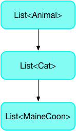
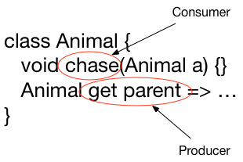

Dart 語言裡的型別體系
Dart 是型別安全的程式語言：Dart 使用靜態型別檢查和 執行時期檢查 的組合來確保變數的值始終與變數的靜態型別或其他安全型別相匹配。儘管型別是必需的，但由於 型別推斷，型別的註釋是可選的。
靜態型別檢查的一個好處是能夠使用 Dart 的 靜態分析器 在編譯時找到錯誤。
可以向泛型類新增型別註釋來修復大多數靜態分析錯誤。最常見的泛型類是集合型別 List<T> 和 Map<K,V> 。
例如，在下面的程式碼中，main() 建立一個列表並將其傳遞給 printInts()，由 printInts() 函式列印這個整數列表。
void printInts(List<int> a) => print(a);
void main() {
final list = [];
list.add(1);
list.add('2');
printInts(list);
}上面的程式碼在呼叫 printInts(list) 時會在 list （高亮提示）上產生型別錯誤：
error - The argument type 'List<dynamic>' can't be assigned to the parameter type 'List<int>'. - argument_type_not_assignable高亮錯誤是因為產生了從 List<dynamic> 到 List<int> 的不正確的隱含轉換。
list 變數是 List<dynamic> 靜態型別。這是因為 list 變數的初始化宣告 var list = []
沒有為分析器提供足夠的資訊來推斷比 dynamic 更具體的型別引數。
printInts() 函式需要 List<int> 型別的引數，因此導致型別不匹配。
在建立 list 時新增型別註釋 <int>（程式碼中高亮顯示部分）後，分析器會提示無法將字串引數分配給 int 引數。刪除 list.add("2") 中的字串引號使程式碼透過靜態分析並能夠正常執行。
void printInts(List<int> a) => print(a);
void main() {
final list = <int>[];
list.add(1);
list.add(2);
printInts(list);
}什麼是型別安全
型別安全是為了確保程式不會進入某些無效狀態。安全的型別系統意味著程式永遠不會進入表示式求值為與表示式的靜態型別不匹配的值的狀態。例如，如果表示式的靜態型別是 String ，則在執行時保證在評估它的時候只會獲取字串。
Dart 的型別系統，同 Java 和 C＃中的型別系統類似，是安全的。它使用靜態檢查（編譯時錯誤）和執行時期檢查的組合來強制執行型別安全。例如，將 String 分配給 int 是一個編譯時錯誤。如果物件不是字串，使用 as String 將物件轉換為字串時，會由於執行時錯誤而導致轉換失敗。
型別安全的好處
安全的型別系統有以下幾個好處：
-
在編譯時就可以檢查並顯示型別相關的錯誤。
安全的型別系統強制要求程式碼明確型別，因此在編譯時會顯示與型別相關的錯誤，這些錯誤可能在執行時可能很難發現。 -
程式碼更容易閱讀。
程式碼更容易閱讀，因為我們信賴一個擁有指定型別的值。在型別安全的 Dart 中，型別是不會騙人的。因為一個擁有指定型別的值是可以被信賴的。 -
程式碼可維護性更高。
在安全的型別系統下，當更改一處程式碼後，型別系統會警告因此影響到的其他程式碼塊。 -
更好的 AOT 編譯。
雖然在沒有型別的情況下可以進行 AOT 編譯，但產生的程式碼效率要低很多。
靜態檢查中的一些技巧
大多數靜態型別的規則都很容易理解。下面是一些不太明顯的規則：
-
重寫方法時，使用型別安全返回值。
-
重寫方法時，使用型別安全的引數。
-
不要將動態型別的 List 看做是有型別的 List。
讓我們透過下面範例的型別結構，來更深入的瞭解這些規則：

重寫方法時，使用型別安全的返回值
子類別方法中返回值型別必須與父類方法中返回值型別的型別相同或其子類別型。考慮 Animal 類中的 Getter 方法：
class Animal {
void chase(Animal a) { ... }
Animal get parent => ...
}父類 Getter 方法返回一個 Animal 。在 HoneyBadger 子類別中，可以使用 HoneyBadger（或 Animal 的任何其他子類別型）替換 Getter 的返回值型別，但不允許使用其他的無關型別。
class HoneyBadger extends Animal {
@override
void chase(Animal a) { ... }
@override
HoneyBadger get parent => ...
}class HoneyBadger extends Animal {
@override
void chase(Animal a) { ... }
@override
Root get parent => ...
}重寫方法時，使用型別安全的引數。
子類別方法的引數必須與父類方法中引數的型別相同或是其引數的父型別。不要使用原始引數的子類別型，替換原有型別，這樣會導致引數型別”收緊”。
考慮 Animal 的 chase(Animal) 方法：
class Animal {
void chase(Animal a) { ... }
Animal get parent => ...
}chase() 方法的引數型別是 Animal 。一個 HoneyBadger 可以追逐任何東西。因此可以在重寫 chase() 方法時將引數型別指定為任意類別型 (Object) 。
class HoneyBadger extends Animal {
@override
void chase(Object a) { ... }
@override
Animal get parent => ...
}Mouse 是 Animal 的子類別，下面的程式碼將 chase()
方法中引數的範圍從 Animal 縮小到 Mouse 。
class Mouse extends Animal {...}
class Cat extends Animal {
@override
void chase(Mouse x) { ... }
}下面的程式碼不是型別安全的，因為 a 可以是一個 cat 物件，卻可以給它傳入一個 alligator 物件。
Animal a = Cat();
a.chase(Alligator()); // Not type safe or feline safe.不要將動態型別的 List 看做是有型別的 List
當期望在一個 List 中可以包含不同型別的物件時，動態列表是很好的選擇。但是不能將動態型別的 List 看做是有型別的 List 。
這個規則也適用於泛型型別的例項。
下面程式碼建立一個 Dog 的動態 List ，並將其分配給 Cat 型別的 List ，表示式在靜態分析期間會產生錯誤。
class Cat extends Animal { ... }
class Dog extends Animal { ... }
void main() {
List<Cat> foo = <dynamic>[Dog()]; // Error
List<dynamic> bar = <dynamic>[Dog(), Cat()]; // OK
}執行時期檢查
執行時期檢查工具會處理分析器無法捕獲的型別安全問題。
例如，以下程式碼在執行時會丟擲例外，因為將 Dog 型別的 List 賦值給 Cat 型別的 List 是錯誤的：
void main() {
List<Animal> animals = [Dog()];
List<Cat> cats = animals as List<Cat>;
}型別推斷
分析器 (analyzer) 可以推斷欄位，方法，區域變數和大多數泛型型別引數的型別。當分析器沒有足夠的資訊來推斷出一個特定型別時，會使用 dynamic 作為型別。
下面是在泛型中如何進行型別推斷的範例。在此範例中，名為 arguments 的變數包含一個 Map ，該 Map 將字串鍵與各種型別的值配對。
如果顯式鍵入變數，則可以這樣寫：
Map<String, dynamic> arguments = {'argA': 'hello', 'argB': 42};或者，使用 var 讓 Dart 來推斷型別：
var arguments = {'argA': 'hello', 'argB': 42}; // Map<String, Object>Map 字面量從其條目中推斷出它的型別，然後變數從 Map 字面量的型別中推斷出它的型別。在此 Map 中，鍵都是字串，但值具有不同的型別（ String 和 int ，它們具有共同的上限型別 Object ）。因此，Map 字面量的型別為 Map<String, Object> ，也就是 arguments 的型別。
欄位和方法推斷
重寫父類別的且沒有指定型別的欄位或方法，繼承父類中欄位或方法的型別。
沒有宣告型別且不存在繼承型別的欄位，如果在宣告時被初始化，那麼欄位的型別為初始化值的型別。
靜態欄位推斷
靜態欄位和變數的型別從其初始化程式中推斷獲得。需要注意的是，如果推斷是個迴圈，推斷會失敗（也就是說，推斷變數的型別取決於知道該變數的型別）。
區域變數推斷
在不考慮連續賦值的情況下，區域變數如果有初始化值的情況下，其型別是從初始化值推斷出來的。這可能意味著推斷出來的型別會非常嚴格。如果是這樣，可以為他們新增型別註釋。
var x = 3; // x is inferred as an int.
x = 4.0;num y = 3; // A num can be double or int.
y = 4.0;引數型別推斷
建構函式呼叫的型別引數和 泛型方法 呼叫是根據上下文的向下資訊和建構函式或泛型方法的引數的向上資訊組合推斷的。如果推斷沒有按照意願或期望進行，那麼你可以顯式的指定他們的引數型別。
// Inferred as if you wrote <int>[].
List<int> listOfInt = [];
// Inferred as if you wrote <double>[3.0].
var listOfDouble = [3.0];
// Inferred as Iterable<int>.
var ints = listOfDouble.map((x) => x.toInt());在最後一個範例中，根據向下資訊 x 被推斷為 double 。閉套件的返回型別根據向上資訊推斷為 int 。在推斷 map() 方法的型別引數：<int> 時，Dart 使用此返回值的型別作為向上資訊。
替換型別
當重寫方法時，可以使用一個新型別（在新方法中）替換舊型別（在舊方法中）。類似地，當引數傳遞給函式時，可以使用另一種型別（實際引數）的物件替換現有型別（具有宣告型別的引數）要求的物件。什麼時候可以用具有子類別型或父型別的物件替換具有一種型別的物件那？
從_消費者_和_生產者_的角度有助於我們思考替換型別的情況。消費者接受型別，生產者產生型別。
可以使用父型別替換消費者型別，使用子類別型替換生產者型別。
下面讓我們看一下普通型別賦值和泛型型別賦值的範例。
普通型別賦值
將物件賦值給物件時，什麼時候可以用其他型別替換當前型別？答案取決於物件是消費者還是生產者。
分析以下型別層次結構：
思考下面範例中的普通賦值，其中 Cat c 是 消費者 而 Cat() 是 生產者：
Cat c = Cat();在消費者的位置，任意類別型（Animal）的物件替換特定型別（Cat）的物件是安全的。因此使用 Animal c 替換 Cat c 是允許的，因為 Animal 是 Cat 的父類別。
Animal c = Cat();但是使用 MaineCoon c 替換 Cat c 會打破型別的安全性，因為父類可能會提供一種具有不同行為的 Cat ，例如 Lion ：
MaineCoon c = Cat();在生產者的位置，可以安全地將生產型別 (Cat) 替換成一個更具體的型別 (MaineCoon) 的物件。因此，下面的操作是允許的：
Cat c = MaineCoon();泛型賦值
上面的規則同樣適用於泛型型別嗎？是的。考慮動物列表的層次結構— Cat 型別的 List 是 Animal 型別 List 的子類別型，是 MaineCoon 型別 List 的父型別。
 -> List
在下面的範例中，可以將 MaineCoon 型別的 List 賦值給 myCats ，因為 List<MaineCoon> 是 List<Cat> 的子類別型：
List<MaineCoon> myMaineCoons = ...
List<Cat> myCats = myMaineCoons;從另一個角度看，可以將 Animal 型別的 List 賦值給 List<Cat> 嗎？
List<Animal> myAnimals = ...
List<Cat> myCats = myAnimals;這個賦值不能透過靜態分析，因為它建立了一個隱含的向下轉型 (downcast)，這在非 dynamic 型別中是不允許的，比如 Animal。
若要這段程式碼能夠透過靜態分析，需要使用一個顯式轉換，這可能會在執行時導致失敗。
List<Animal> myAnimals = ...
List<Cat> myCats = myAnimals as List<Cat>;不過，顯式轉換在執行時仍然可能會失敗，這取決於轉換被轉換內容的實際型別 (此處是 myAnimals)。
方法
在重寫方法中，生產者和消費者規則仍然適用。例如：

對於使用者（例如 chase(Animal) 方法），可以使用父型別替換引數型別。對於生產者（例如 父類 的 Getter 方法），可以使用子類別型替換返回值型別。
有關更多資訊，請參閱 重寫方法時，使用型別安全的返回值 以及 重寫方法時，使用型別安全的引數。
其他資源
以下是更多關於 Dart 型別安全的相關資源：
-
修復常見型別問題 - 編寫型別安全的 Dart 程式碼時可能遇到的錯誤，以及解決錯誤的方法。
-
修復型別轉換錯誤 - 瞭解和學習如何修復型別轉換錯誤
-
健全的空安全 - 學習關於如何撰寫健全的空安全程式碼。
-
Customizing static analysis - 如何使用分析配置檔案設定及自訂分析器和 linter。